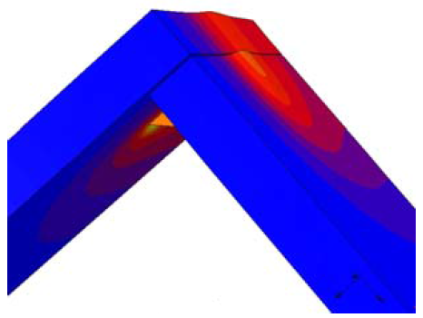
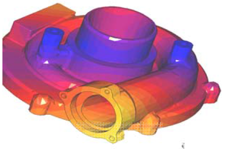

Udy is an independent private research and consulting company specialized in Computational Physics by means of Computer Aided Engineering (CAE) and more specifically the Finite Element and/or Finite Volume Method
Our team has over 30 years experience in simulation technology in hundreds of projects worldwide : simulation based analysis, conceptual modeling, frontloading, simulation of complete lifecycle, virtual prototyping, consulting, and education
Udy partners with best state-of-the art software, augmented by our own programming capabilities to implement your specific needs not available in the standard solvers
Our knowledge of applied physics and engineering consulting is instrumental for efficient modeling abstraction which captures the essentials of the problem without needless computer load
- Material constitutive behavior without unphysical simplifications
- Correct interpretation of the results
Udy has a fundamental business approach and is committed to increase their customer’s profitability by first-time right products and processes which are robust and reliable
Key Products and Services
- Computational Mechanics and Thermo-Mechanics
- Micro- and Nano-Mechanics
- Computational Fluid Dynamics and Acoustics
- Combined-Physics, Physics of failure
- Reliability (e.g. Electronic boards) and Durability
- Sound radiation
- Welding simulation
Welding deformation
 Turbo machinery
Contact Person
U.P. Goossens
Email: udy@udy.be
Tel: +32 52 47 27 33
http://www.udy.be
Kapellestraat 64
B-9220 Hamme
Belgium